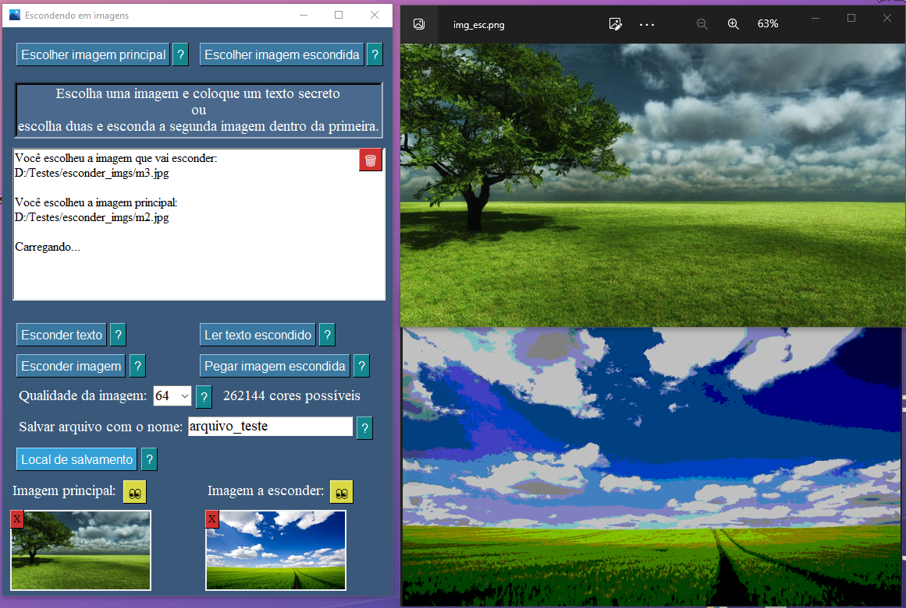
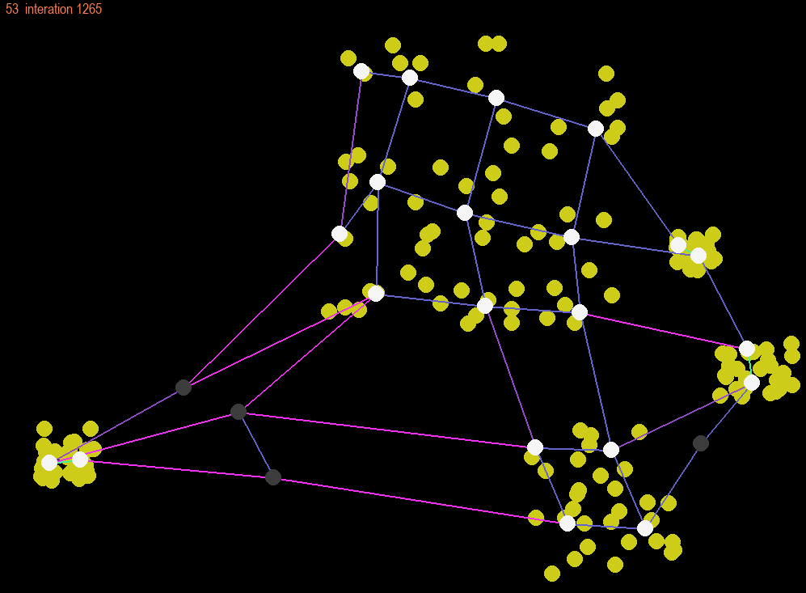
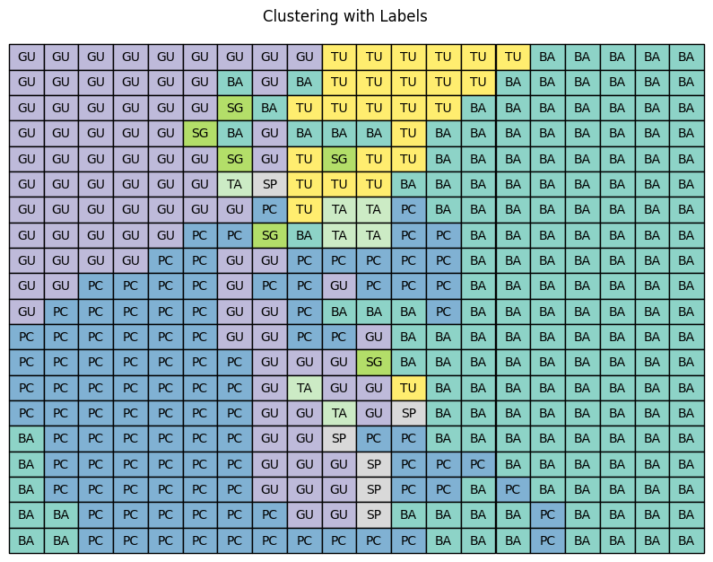
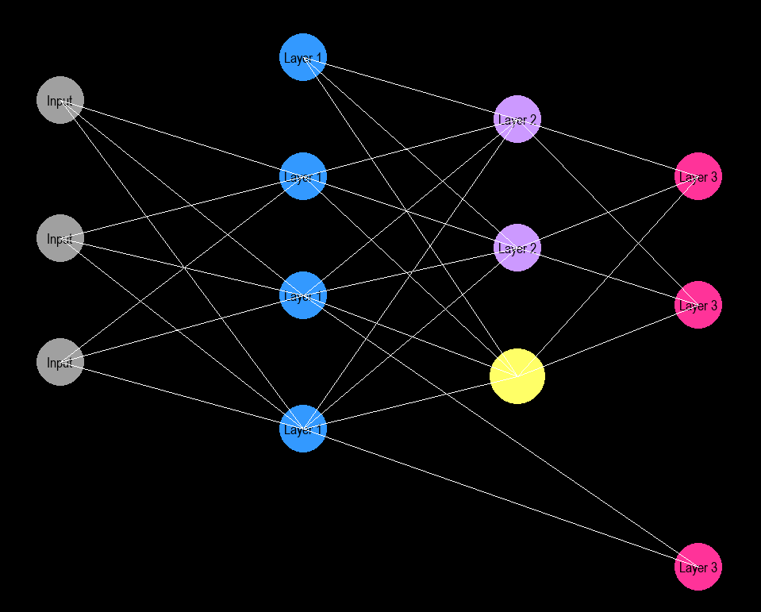
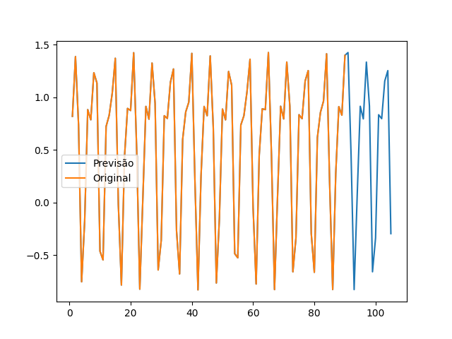

Programas:
- Free Regression;
- Card Game Ascii;
- Escondedor de imagens;
- Rede Neural Artificial do zero;
- Engine 3d;
- Render 3d;
- Self Organizing Maps do zero;
- Conversor txt para png e vice-versa;
Trata-se de uma biblioteca desenvolvida para a construção de regressões genéricas de diversos tipos.
Com ela, é possível ajustar aspectos essenciais para uma regressão específica, conforme a necessidade do problema.
Por exemplo, é possível selecionar a função regressora, definir os parâmetros iniciais da busca, escolher a função de perda (por padrão, utiliza-se mínimos quadrados com uma abordagem numérica), entre outras configurações.
Para mais detalhes, consulte a documentação da biblioteca clicando no nome Free Regression.
Jogo desenvolvido do zero para ser executado no terminal. É necessário ter o Python instalado para executá-lo.
O jogo opera com dois processos: um responsável pela lógica do jogo e outro pela engine ASCII, que cuida da exibição no terminal.
Trata-se de um jogo de cartas por turnos, no qual cada jogador possui três cartas. Para testá-lo, basta baixar o jogo e executar o comando python3 play.py na pasta onde o arquivo foi salvo.
É um programa que oculta imagens dentro de outras imagens. O algoritmo utilizado baseia-se em aritmética modular (matemática dos restos),
no qual ele reserva uma quantidade de bits para a imagem principal e outra quantidade de bits para a imagem oculta.
Montei uma Rede Neural Artificial do zero. A rede é iterativa e não é muito rápida devido à inclusão de vários mecanismos de autocorreção,
o que a tornou mais lenta.
Existem dois códigos disponíveis: um para criar e treinar a rede usando comandos e outro que permite criar graficamente um design de rede, que pode ser exportado pressionando a
tecla 'e' após a montagem da rede. O segundo código utiliza o pygame, portanto, para executá-lo, é necessário ter o Python e o pygame instalados no seu computador.
Após exportar a rede, ele criará um arquivo .json que só pode ser lido pelo interpretador do código principal. Para importar o
arquivo, basta executar o código e usar o comando rede.import_design. Se o arquivo .json estiver na mesma pasta, ele será importado.
Depois disso, você pode treiná-lo, e um exemplo de treinamento está no código principal usando o comando rede.train(...).
Há também um vídeo de exemplo na mesma pasta onde o código está localizado. Além disso, você pode acessar o repositório no
GitHub para baixá-lo como uma biblioteca em sua própria máquina.
Para ver um exemplo, (clique aqui).
Foi uma engine que desenvolvi do zero. No projeto, importo apenas a biblioteca pygame para traçar linhas e polígonos.
Utilizo um sistema de coordenadas tridimensionais e projeto-o em um plano 2D que é renderizado pelo pygame. Se estiver interessado em executar o código,
também é necessário baixar o módulo matrix que criei para a manipulação de vetores e matrizes. Todos os arquivos estão na mesma pasta e possuem extensão .py.
Portanto, para testá-lo, é necessário ter o Python e o pygame instalados no seu computador.
Dentro da pasta, há um vídeo que demonstra a translação de um triângulo e um quadrado.
Após os testes com a engine 3D, desenvolvi este novo programa de renderização, que leva em consideração fontes de luz. O algoritmo, embora não altamente otimizado, permite programar movimentos de luz, renderizar a cena e visualizar o resultado em um arquivo MP4.
Self-Organizing Maps (SOM), também conhecidos como Mapas Auto-Organizáveis ou Redes de Kohonen,
são algoritmos de aprendizado de máquina não supervisionados. Este projeto foi desenvolvido do zero com algumas diferenças em relação às abordagens tradicionais.
Uma das principais diferenças é que a grade gerada para os neurônios é sempre quadrada e não aleatória. Além disso, a função de atração dos neurônios é discreta,
e para a classificação, o algoritmo faz uso de um dendrograma que facilita a escolha de quantidades específicas
de grupos (Para um exemplo, clique aqui).
Dentro desse link tem dois conversores, um monocromático e um RGB, os dois funcionam da mesma forma, você escolhe um arquivo txt
transforma ele em um png e vice-versa. O código não aceita erros na hora de colocar os nomes do txt ou do png!
Imagens dos Programas:

Escondedor de Imagens

Vizualizando o SOM

Engine 3d do Zero

Cluster pelo SOM

Rede Neural Artificial do Zero

Previsão de Séries Temporais com Cadeias de Markov

Render do zero